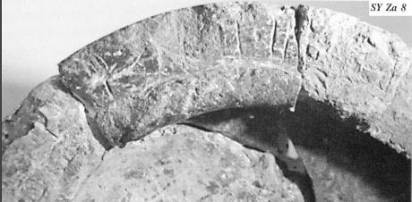
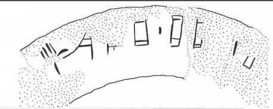

-
SYZa8
Names
SYZa8, SY Za 8
Support
Stone vessel
Location
Syme
Findspot
Unavailable


Scribe
Unavailable
Context
Late Minoan IA
1600-1500 BCE
Dimensions
Catalogue
Hiraklion Museum
Readings
1 1 0 A none
1 1 0 TA none
1 1 0 I none
1 1 0 *301 none
1 1 0 WA none
1 1 0 JA none
1 1 1 *900 none
1 1 2 JA none
1 1 2 JA none
𐘇𐘳𐘚𐙕𐘮𐘱𐄁𐘱𐘱
ATAI*301WAJA*900JAJA
𐘇𐘳𐘚𐙕𐘮𐘱𐄁𐘱𐘱
ATAI*301WAJA*900JAJA
SY Za 8
(HM 3825+3833+5589) (ArchEph 2008, 198-9,
211-12),
circular
serpentine Libation Table (fragments from disturbed deposits in the
south-east and north area of the Enclosure; MM
IIIB-LM IA
context; H. ca. 13.7, D. ca. 18.6 cm). The inscription is written on the
top of the rim, oriented to the interior.
A-TA-]I-*301-
WA
-JA • JA-JA[-•-]•-•[
Commentary © John Younger
References